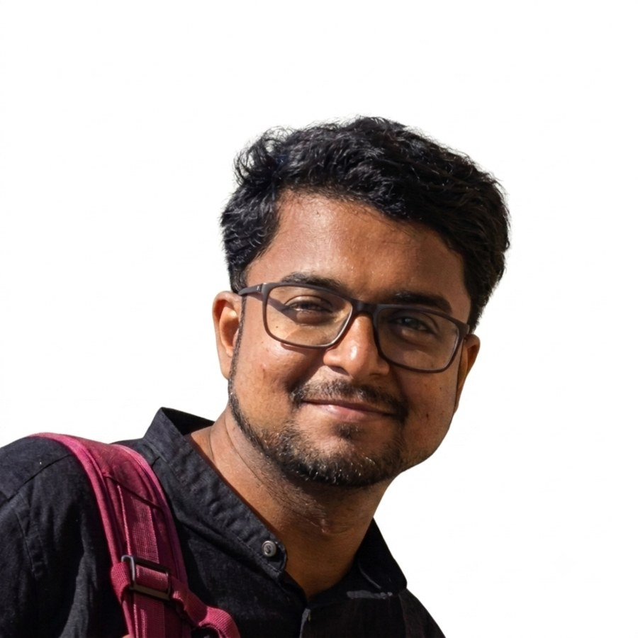

Models
Bigraphs, Markov chains, temporal logics, and model transformations for behavioural reasoning.
Research Associate · University of Glasgow
I work on formal modelling, model checking, process mining, and verified digital twins for resilient and sustainable transport systems.
Current project: TransiT, a UK research hub on digital twinning for transport decarbonisation.

Latest news
I won the Best Thesis Award for my PhD thesis, Model and Logical Embeddings for Model Checking of Probabilistic and Stochastic Systems, at the 13th Convocation of IISER Bhopal.
Updates
Bigraphs, Markov chains, temporal logics, and model transformations for behavioural reasoning.
Process mining and event-log analysis for connecting observed executions to formal abstractions.
Verification-oriented digital twins for validation, prediction, resilience analysis, and decision support.